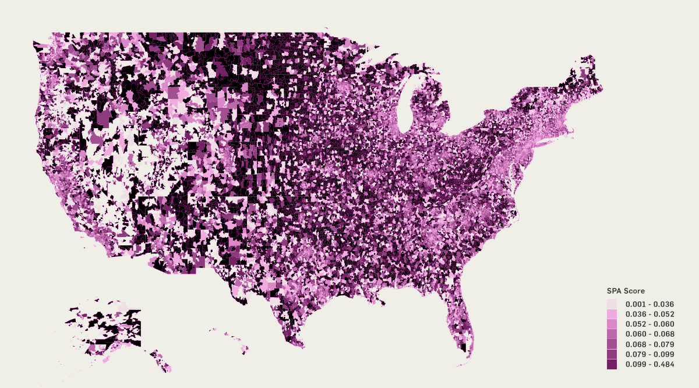

Subscriber Segmentation
WSJ customers have been grouped by similar over-indexed responses on lifestyle, news preferences, and demographics and cultivated into 6 core segments.
A model is a mathematical representation of real world behaviors or events. It can be used for multiple purposes: gain insights, make predictions, and identify patterns, which help us understand our customers and make the business grow.
WSJ customers have been grouped by similar over-indexed responses on lifestyle, news preferences, and demographics and cultivated into 6 core segments.
SPA scores are standardized measurements reflecting future subscriber churn across News Corp properties.
Customer Appraisal Scores are individualized assessments of the current and future monetary value of a customer.
Standardized measurement to understand customer behavior and engagement.
Segmentation, SPA, CAS, LEAP form a foundation to predict the next best action to drive customers through lifecycles.
